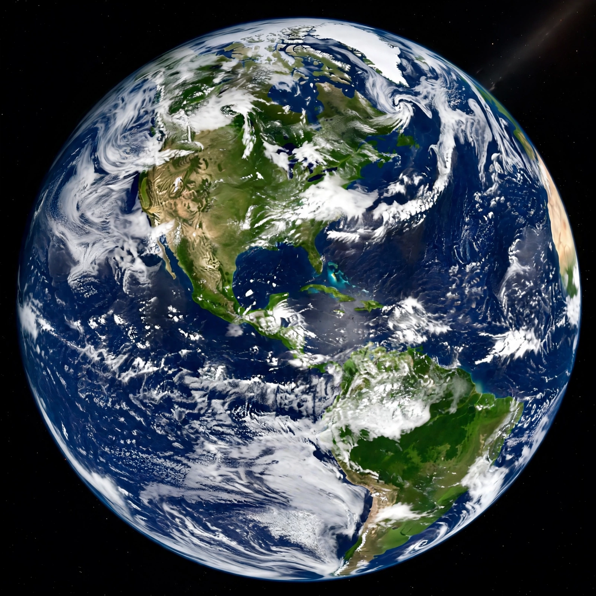

| Laudato si' | |
 | |
| Type | Encyclical letter |
|---|---|
| Author | Pope Francis |
| Date | 24 May 2015 (signed); released 18 June 2015 |
| Subject | Environment, climate change, poverty |
| Subtitle | "On care for our common home" |
Laudato si' (Medieval Italian for "Praise be to you") is the second encyclical of Pope Francis, dated 24 May 2015 and published on 18 June 2015. Subtitled "on care for our common home," it is addressed to "every person living on this planet" and addresses the environmental crisis — above all climate change — together with global poverty. The title comes from St Francis of Assisi's Canticle of the Creatures: "Laudato si', mi' Signore" ("Praise be to you, my Lord").
The encyclical's six chapters survey pollution, climate change, water scarcity, biodiversity loss and global inequality; present the biblical case for creation's intrinsic value; diagnose the human roots of the crisis in a "technocratic paradigm" and throwaway culture; and propose an "integral ecology" linking environmental, economic and social concerns. Its most quoted line insists that the climate "is a common good, belonging to all and meant for all," and that "everything is connected." Francis accepts the scientific consensus that warming is mainly human-caused and argues that wealthy nations bear an "ecological debt" to the poor, who suffer most from environmental damage — extending the tradition of Catholic social teaching and the common good to the planet itself.
Laudato si' was welcomed by environmental and development organisations and by many scientific and faith bodies, and is credited with building moral momentum ahead of the Paris climate conference of December 2015. Some free-market commentators criticised its scepticism toward carbon markets and economic growth. In 2023 Francis issued a follow-up exhortation, Laudate Deum, lamenting insufficient action since 2015.